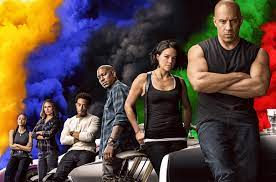

|  | >
Fast Furius 9
Originalmente estaba programada para ser estrenada el 22 de mayo de 2020, pero debido a la creciente pandemia de enfermedad por coronavirus, el director de la cinta junto con Vin Diesel por medio de las redes decidieron posponer el estreno de la cinta hasta el 2 de abril de 2021 por Universal Pictures. Sin embargo, en septiembre de 2020, fue retrasada por segunda vez, hasta el 28 de mayo de 2021.
Instalados en su vida familiar, Dom (Vin Diesel) y Letty (Michelle Rodriguez) viven en el campo con Brian, el hijo de Dom. Pero los problemas siguen tocando la puerta a la familia: Jakob (John Cena), el hermano menor de Dom, se ha unido con Cipher (Charlize Theron) para causar estragos y cumplir un deseo de venganza por parte de Cipher tras de los sucesos de The Fate of the Furious.